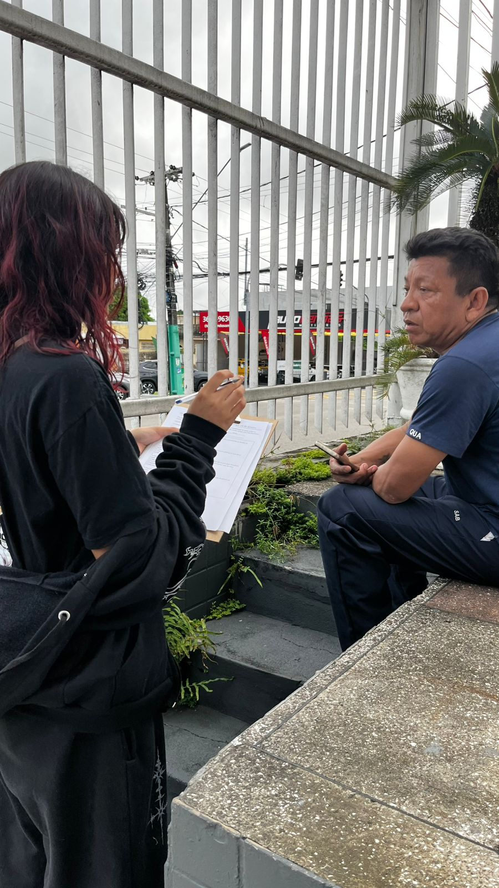
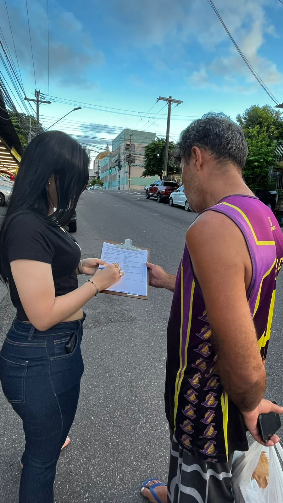

📐 Metodologia
O projeto utiliza a metodologia 3-30-300 para análise da acessibilidade e distribuição das áreas verdes urbanas.
Parâmetro 3
Avaliação realizada através de entrevistas com moradores.

Aplicação do questionário com moradores do bairro Praça 14.

Aplicação do questionário com moradores do bairro Praça 14.
Parâmetro 30
Cálculo da cobertura vegetal utilizando ferramentas do Google Maps.
Mapa temático utilizado para estimar a cobertura de áreas verdes do bairro Praça 14 e verificar o atendimento ao parâmetro 30 da metodologia 3-30-300.
Parâmetro 300
Análise espacial utilizando buffers de 300 metros.
Mapa temático com áreas verdes e buffers de 300 metros no bairro Praça 14.